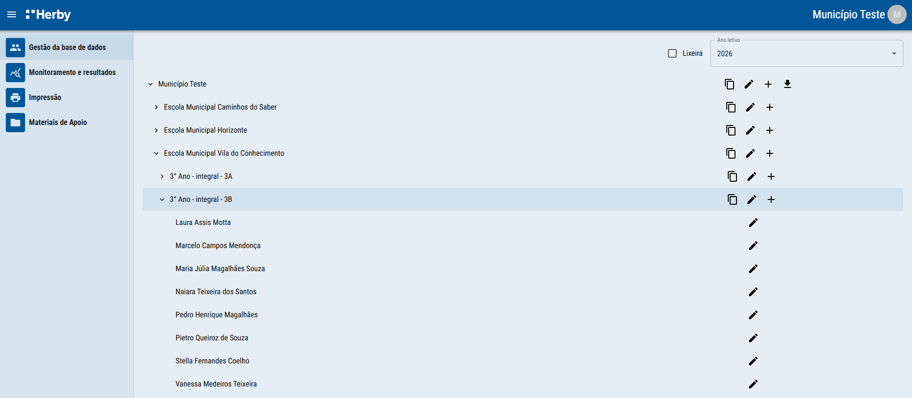
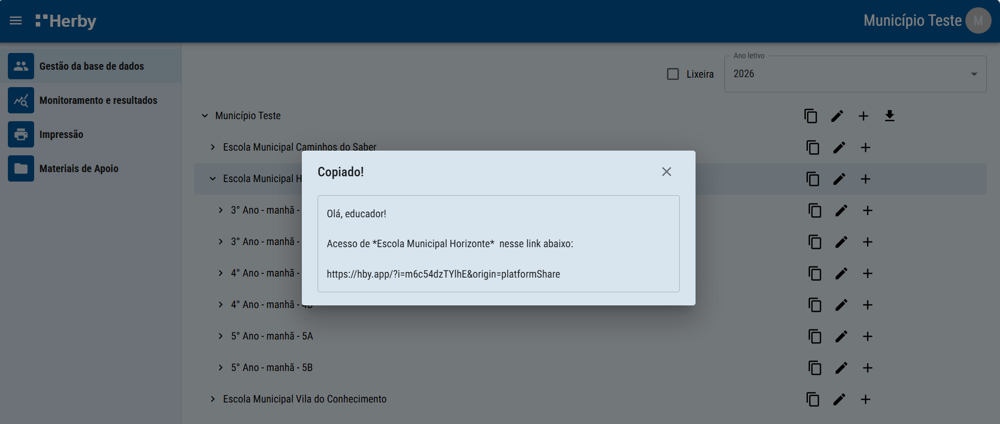
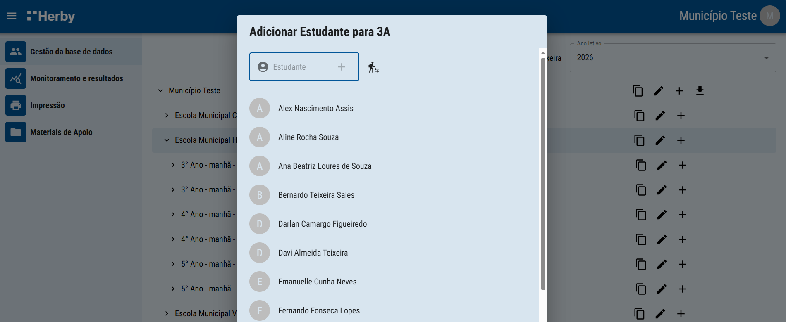
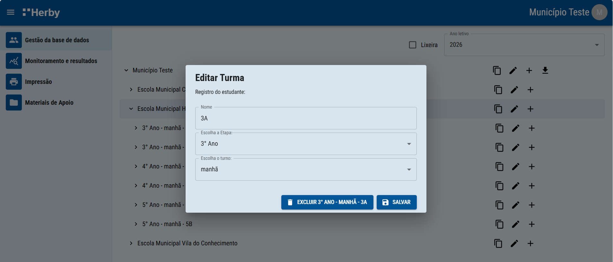
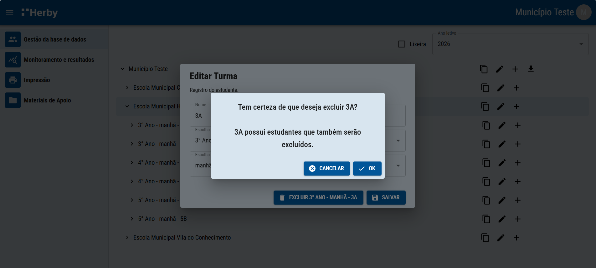

Gestão dos dados de matrícula: compartilhar o acesso e adicionar, editar ou excluir escolas, turmas e estudantes.
Nesta seção, você pode fazer a gestão dos dados de matrícula: incluir, editar ou excluir dados de escolas, turmas e estudantes. Também é possível compartilhar o acesso exclusivo para regionais, municípios, escolas ou turmas.

Clique no ícone Copiar e uma mensagem de boas-vindas, com o link de acesso, será copiada para sua área de transferência. Cole no WhatsApp, e-mail e compartilhe o acesso com os agentes que desejar, desde um município inteiro até somente uma turma específica.

Para adicionar escolas, turmas ou estudantes, clique no ícone Mais, localizado na mesma linha do registro onde você pretende incluir os dados. Para finalizar, clique em Enter ou em Mais.

Para editar dados de escolas, turmas ou estudantes, clique no ícone Pincel, localizado na mesma linha do registro que deseja alterar. Registre a informação correta e clique em Salvar.

Para deletar escolas, turmas ou estudantes, clique no ícone pincel, localizado na mesma linha do registro que deseja excluir. Depois, clique em excluir e confirme sua ação. É importante lembrar que caso haja avaliações já realizadas, os resultados referentes a elas também serão deletados.
